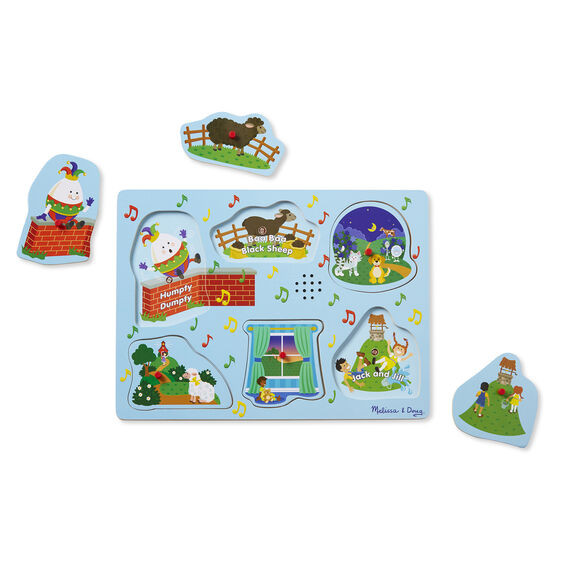

Available
Nursery Rhymes Sing-Along Sound Puzzle (Blue)
Product number: KC001 737
R340Sounds play when pieces are lifted, stop when they are replaced Encourages motor and auditory processing skills, problem solving, and narrative thinking Product: 11.75
Enquire about this product

Nursery Rhymes Sing-Along Sound Puzzle (Blue) at Kids Corner KZN
Nursery Rhymes Sing-Along Sound Puzzle (Blue) is part of our Books collection. Kids Corner KZN stocks toys for learning, pretend play, creative play, gifting and everyday childhood discovery in South Africa.
Browse more Books toys